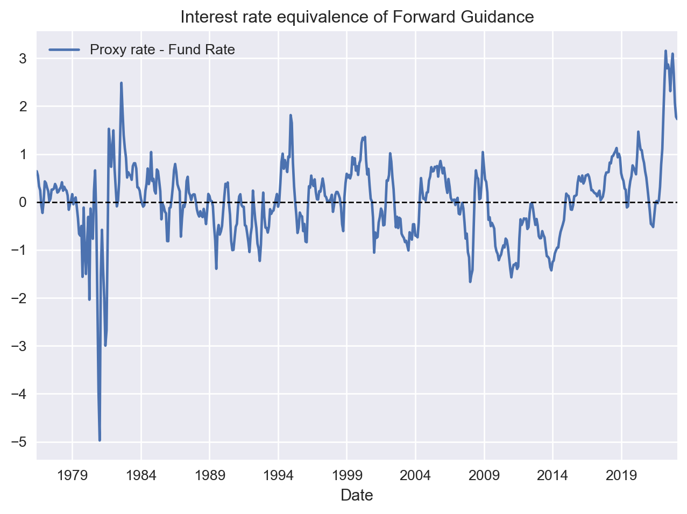

Forward Guidance
Some Stylised Facts and recent performance
Monetary Policy
Macroeconomics
Inflation
Introduction
In recent years, the Federal Reserve (the Fed) has increasingly used forward guidance as a tool to steer interest rates in the desired direction. Forward guidance involves the Fed communicating its likely future policy stance to the markets, which allows the Fed to shape expectations and influence interest rates. This tool became particularly important during the 2008 financial crisis when the federal funds rate hit zero. The Fed also used its balance sheet as an additional tool for monetary policy by initiating large-scale asset purchases to support the economy in the aftermath of the crisis.
In this post, I discuss a few stylized facts about forward guidance and its role in the most recent period when inflation become the hot topic of our days. The Fed’s use of forward guidance can be seen by comparing the “proxy rate” published by the Fed of San Francisco and the Fed’s policy rate ( See here and here).
The difference between these rates reflects the interest rate equivalent of the forward guidance. Before the global financial crisis, the proxy rate and the fund rate were quite close to each other. After the crisis, the Fed was able to set what was equivalent to a negative interest rate by loosening financial conditions. This amounted to negative interest rates as shown in the figure above. This situation continued until 2014 when the Fed effectively ended its stimulus and started becoming more hawkish all the way until the pandemic.
Both inside and outside academia, interpreting how hawkish the Fed is was a source of tremendous confusion as most strategists and economic analysts got used to only checking Fed’s fund rate without paying serious attention to how forward guidance was evolving (nor how it works). To be fair, that was also the result of a lack of a statistical measure that could map the effect of forward guidance on interest rates.
With the availability of the proxy rate, however, this is no excuse anymore. Yet, in recent years much of the analysis (including commentary by respected academics) rushed to conclude that the Fed acted with a delay. But as shown in the figure below, this is in stark contrast with evidence. As we can see, the Fed turned hawkish and started preparing the markets (translation: tighten financial conditions) way before it started raising interest rates. The exact timing that this happened is around July 2021, which is 8 months earlier than the first rate hike in March 2022.
Forward Guidance Since the Pandemic
It is important to note that the proxy rate and the fund rate cannot be exactly the same even before the GFC. This is due to measurement errors in calculating the proxy rate, as well as the potential influence of Fed officials’ speeches, which can reveal the Fed’s intentions and impact markets. However, when the statistical error is small, we can assume that most of the difference between the proxy rate and the fund rate is due to the effect of forward guidance.
In the figure below, we see the difference between the proxy rate and the fund rate, which shows the hypothetical level of interest rates that changes in the Fed’s balance sheets and direct communication have added or subtracted from the official policy rate. For example, when the Fed started turning hawkish, its forward guidance added an extra 3% at the peak of its hawkish stance. This meant that, at that time, the economy was effectively operating as if the Fed set an interest rate equal to about 6%, rather than the official policy rate of 3% at the peak of the proxy rate.
Since then, the Fed it actually soften financial conditions but kept hiking. However, the proxy rate is a leading indicator, and hence, the evidence from the figure suggests that the Fed is likely to pause and start cutting interest rates soon (not this was way before the revision in the implied fund rate after the SBV shock). This assumes that the Fed knows what is doing. To the extend that this is not true, this evidence can also be used against the Fed and some disconnect between Fed’s stance and what the market believe.

The Most Hawkish Fed in the US History
To conclude, let me make some additional observations about forward guidance and explain why the Fed’s current stance is the most hawkish since the 1970s. In the figure below, I present the z-score of the forward guidance measure (i.e. distance between the proxy rate and fund rate). This metric enables us to compare the current stance with historical averages more consistently. A positive z-score indicates a hawkish stance, whereas a negative z-score denotes a dovish stance.
The distribution of forward guidance across different decades reveals some interesting insights. During the 1970s, markets were more likely seeing the Fed as being pursuing a soft policy stance - a case which have contributed to runaway inflation at that period. This perception persisted in the next decade, making, Volcker’s job a little harder. Since 2000, when forward guidance became an integral part of the Fed’s policy framework, we saw a better communication from the Fed and a symmetrical effect on the markets.
Post-pandemic, evidently the Fed turned hawkish to fight inflation and this was also reflected in its forward guidance as well as in the proxy rate. Until now, a lot of the market commentary has accused the Fed as doing too little, yet the evidence is against this false perception. According to the figure, the Fed has exercised the most hawkish forward guidance in the US, far more hawkish than the Volcker era. Overall, this is inline with the camp that is suggesting that the Fed had already adopted an extreme stance to fight inflation. I first talked about this in an old post, where I tried to understand how hawkish the Fed by reverse engineering its projection, and concluded that although the Fed is quite hawkish, it was likely to increase interest rate (a prediction which turned true as markets back then were underestimating this possibility). This evidence is also in line with the academic discussions that effectively say that what matters is the pace of hikes, and not necessary the level of interest rates. And, as others have discussed, the Fed - partly in order to catch-up with inflation - moved in the fastest rate increases in modern history.
To the extent that the proxy rate still represents and accurately measures Fed’s intentions, the overall evidence here is suggesting that the Fed after seeing that is winning the battle over inflation so far, it seems to have become convinced that it is about to win the war. Although, the proxy rate is suggesting that the Fed is stilling hawkish its intentions are softening and became less hawkish (note the term: less hawkish, not Dovish) as early as February.
<matplotlib.lines.Line2D at 0x7ff77663ffa0>